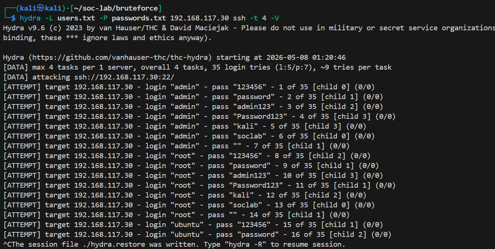
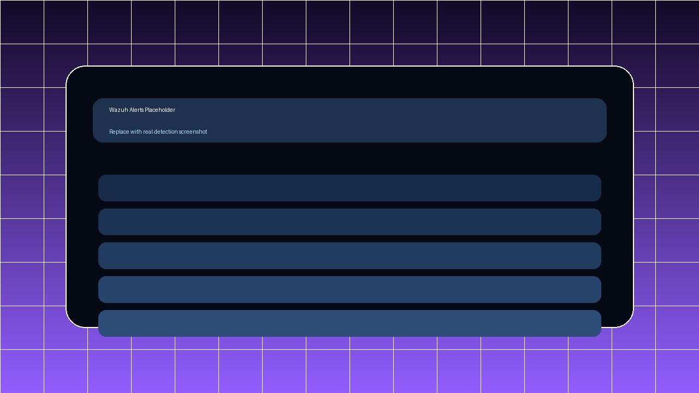
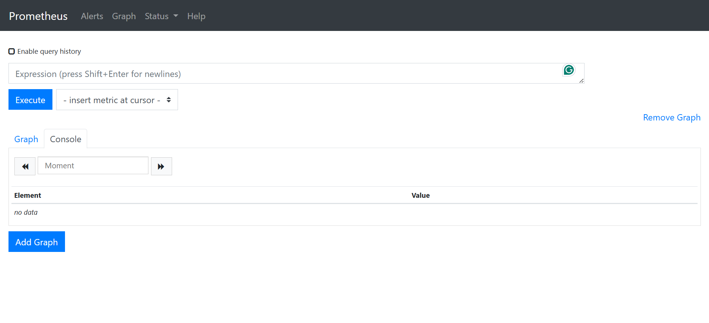
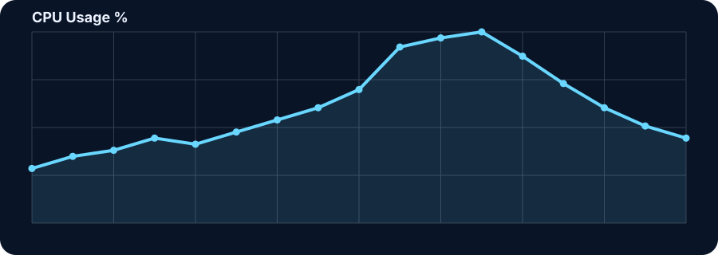
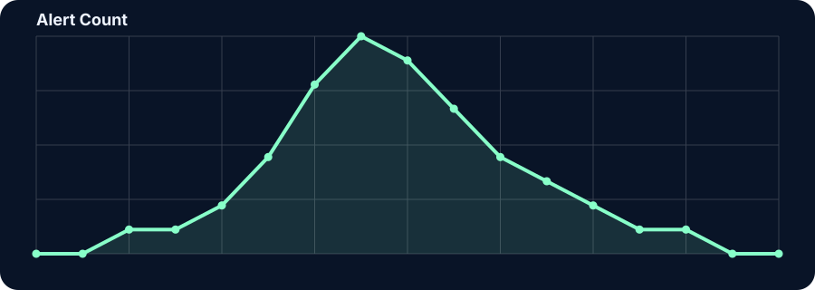
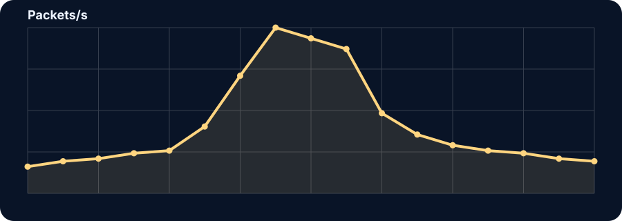

Elite recruiter version
From attack simulation to clear defensive evidence.
A polished SOC portfolio that turns brute force, reconnaissance, web enumeration, detections, uptime checks, metrics, and case-study reporting into one easy interview narrative.
demo.sh
$
Hydra SSH brute force
Show attacker action, Ubuntu failures, Wazuh alerts, Security Onion traffic, and Prometheus context as one clean chain.
Nmap active scanning
Use reconnaissance as an early-warning narrative before exploitation even begins.
Prometheus + Nagios
Prove the lab is not only about alerts, but also uptime, trends, and operational maturity.
Live demo pipeline
GIF previews, play controls, and full-view evidence
Attack
Hydra SSH brute force
Short inline GIF for recruiter preview, with MP4-ready pipeline documented in the repo.

Detection
Wazuh alert drill-down
Good for live walkthroughs of rule context, event details, and triage steps.

Monitoring
Prometheus and Nagios overview
Use this to show targets, graphs, alert states, and host reachability as operational context.

Metrics section
Embedded Prometheus-style charts
These SVG charts are lightweight, GitHub Pages friendly, and can be replaced later with screenshots or exports from your real dashboards.
CPU usage during brute-force window

Alert timeline

Network traffic pattern

MITRE ATT&CK
Technique mapping recruiters and interviewers recognize quickly
This section translates tool output into a standard defensive language. It helps move the discussion from dashboards to analyst reasoning.
Brute Force
Hydra against SSH on Ubuntu. Logged in auth sources, surfaced in Wazuh, validated in network evidence.
Active Scanning
Nmap reconnaissance across the lab to enumerate hosts and services before exploitation.
Wordlist Scanning
Gobuster-based web enumeration tied to web logs, traffic evidence, and service monitoring context.
Case-study reporting
Incident reports written like real deliverables
Each report connects attacker activity, evidence sources, analyst assessment, and lessons learned. The full markdown reports live in the repository.
Incident 01 · SSH brute force
Controlled Hydra attack against Ubuntu SSH with host, network, uptime, and metrics correlation.
Open reportIncident 02 · Nmap reconnaissance
Pre-attack active scanning documented as suspicious discovery activity and early warning signal.
Open reportIncident 03 · Web enumeration
Gobuster-based directory scanning tied to web logs, network observations, and performance context.
Open reportSOC analyst interview prep
Questions I can answer directly from the lab
Use this section as a rehearsal tool before interviews. The repo also includes a longer markdown Q&A file.
Why did you use both Nagios and Prometheus?
Nagios gives clear service-state awareness, while Prometheus adds time-series metrics and trend analysis. Together they show operational maturity beyond simple up/down checks.
How do you explain the value of correlation?
Correlation reduces blind spots. If logs, network evidence, service health, and metrics all support the same conclusion, analyst confidence is much higher.
Which MITRE techniques does the lab demonstrate?
The clearest mappings are T1110 for brute force, T1595 for active scanning, and T1595.003 for wordlist scanning.
What is the strongest story in the portfolio?
The SSH brute-force scenario because it is easy to understand, realistic, and demonstrates attack simulation, detections, network context, and monitoring in one chain.
Custom domain
vincentita.dev
The site includes a ready-to-use CNAME file so the GitHub Pages deployment can be upgraded from a repo URL to a polished portfolio domain.
Already included
site/CNAME vincentita.dev
Deployment steps
- Push the repository to GitHub.
- Enable GitHub Pages.
- Set the custom domain to vincentita.dev.
- Point DNS records to GitHub Pages.
- Enable HTTPS after DNS propagates.
Next step
Ready to show this live in interviews
Replace the placeholders with your real screenshots, GIFs, and CV PDF, then publish with the custom domain for a premium finish.